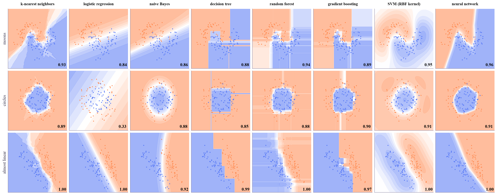

Machine Learning
 about 13 min
about 13 min ml-w8d5.ipynb
ml-w8d5.ipynb
Project: which model when?
Every classifier you've met, on the same data, judged the same honest way. Then a one-page guide to choosing a model, and the habit that matters more than any model: comparing fairly.
In this lesson you will
- See how kNN, logistic regression, naive Bayes, trees, forests, boosting, SVMs and networks each draw a boundary
- Compare models fairly: the same folds, cross-validation on the training set, one final look at the test set
- Pick a sensible first model for a new problem, and know when a difference is only noise
Warm-up
1 minThe no free lunch rule

There is a famous theorem in machine learning called "no free lunch": averaged over every possible problem, no model beats any other. So "which model is best?" has no answer. "Which model is best for this data?" does, and today you'll find out how to answer it honestly.
Big idea
3 minEvery model has a shape
Each model you've learned makes a different assumption about what the boundary looks like. That assumption, its inductive bias, is why it wins on some data and loses on other data:
| Model | Its boundary | Good first choice when… | Watch out for… |
|---|---|---|---|
| Logistic regression | a straight line (plane) | you want a fast, explainable baseline | curved boundaries, unless you add features |
| Naive Bayes | simple curves from bell shapes | text, tiny data, you need speed | overconfident probabilities |
| k-nearest neighbors | any shape, from the examples | few features, plenty of examples | scaling, many features, slow predictions |
| Decision tree | boxes, axis by axis | you need rules a person can read | overfitting: one tree is unstable |
| Random forest | smoothed boxes | tables of data, little tuning time | large memory, less explainable |
| Gradient boosting | finely shaped boxes | tables of data: often the strongest | tuning, and stopping in time |
| SVM with a kernel | smooth curves, widest margin | small or medium data, many features | scaling, choosing and , big data |
| Neural network | any smooth shape | images, sound, text, lots of data | tuning, data hunger, explaining it |
Rules of thumb for a new table of data: start with logistic regression as a baseline, then try a forest and gradient boosting. For images, sequences and text, go to the networks of next week.
Comparing fairly matters more than the choice. Give every model the same cross-validation folds (week 1) on the training set, put scaling inside a pipeline so it's learned from the training folds only, tune each model's knobs the same way, and open the test set once, for the winner. And if two models are within a fold-to-fold standard deviation of each other, call it a tie and pick the simpler one.
No model wins everywhere: know each one's shape, compare them with the same folds, and treat small differences as ties.
Play
3 minThe zoo
Eight models, trained right here on the same 150 points (dots), scored on the same 100 test points (rings). The gold frame marks the winner.
Try this
Go through the four datasets. Which model fails on the circles, and why? Which one draws boxes everywhere? Then switch to high noise and press New sample a few times: does the same model win every time, or do the top few take turns?
Code
2 minThe showdown in code
The notebook for this lessonEvery code cell below, with what it printed, is in
ml-w8d5.ipynb. To change the code and run it yourself, open the notebook in Google Colab (free, in your browser) or download it for your own Jupyter.import numpy as np
import matplotlib.pyplot as plt
from matplotlib.colors import LinearSegmentedColormap
from sklearn.datasets import make_moons, make_circles, make_classification
from sklearn.model_selection import train_test_split
from sklearn.pipeline import make_pipeline
from sklearn.preprocessing import StandardScaler
from sklearn.neighbors import KNeighborsClassifier
from sklearn.linear_model import LogisticRegression
from sklearn.naive_bayes import GaussianNB
from sklearn.tree import DecisionTreeClassifier
from sklearn.ensemble import RandomForestClassifier, HistGradientBoostingClassifier
from sklearn.svm import SVC
from sklearn.neural_network import MLPClassifier
models = {
"k-nearest neighbors": make_pipeline(StandardScaler(), KNeighborsClassifier(n_neighbors=7)),
"logistic regression": make_pipeline(StandardScaler(), LogisticRegression()),
"naive Bayes": GaussianNB(),
"decision tree": DecisionTreeClassifier(max_depth=5, random_state=0),
"random forest": RandomForestClassifier(n_estimators=200, random_state=0),
"gradient boosting": HistGradientBoostingClassifier(random_state=0),
"SVM (RBF kernel)": make_pipeline(StandardScaler(), SVC()),
"neural network": make_pipeline(StandardScaler(), MLPClassifier((32, 32), max_iter=2000, random_state=0)),
}
Xl, yl = make_classification(n_samples=300, n_features=2, n_redundant=0, n_informative=2, n_clusters_per_class=1,
class_sep=1.2, random_state=3)
datasets = {"moons": make_moons(n_samples=300, noise=0.3, random_state=0),
"circles": make_circles(n_samples=300, noise=0.15, factor=0.5, random_state=1),
"almost linear": (Xl, yl)}
apricot_blue = LinearSegmentedColormap.from_list("apricot_blue", ["#ff8a50", "#ffffff", "#5577f5"])
fig, axes = plt.subplots(3, 8, figsize=(19, 7.4), layout="constrained")
for row, (dname, (X, y)) in enumerate(datasets.items()):
X_tr, X_te, y_tr, y_te = train_test_split(X, y, test_size=0.4, random_state=0)
x0, x1 = X[:, 0].min() - 0.5, X[:, 0].max() + 0.5
y0, y1 = X[:, 1].min() - 0.5, X[:, 1].max() + 0.5
xx, yy = np.meshgrid(np.linspace(x0, x1, 120), np.linspace(y0, y1, 120))
for col, (mname, model) in enumerate(models.items()):
ax = axes[row, col]
model.fit(X_tr, y_tr)
grid = np.c_[xx.ravel(), yy.ravel()]
if hasattr(model, "predict_proba"):
p = model.predict_proba(grid)[:, 1]
else: # the SVM gives a score, not a probability
p = 1 / (1 + np.exp(-model.decision_function(grid)))
p = p.reshape(xx.shape)
ax.contourf(xx, yy, p, levels=12, cmap=apricot_blue, alpha=0.6)
ax.scatter(X_te[:, 0], X_te[:, 1], c=np.where(y_te == 0, "#ff8a50", "#5577f5"), s=7, edgecolors="none")
ax.text(x1 - 0.1, y0 + 0.1, f"{model.score(X_te, y_te):.2f}", ha="right", va="bottom", fontsize=12, weight="bold")
ax.set_xticks([])
ax.set_yticks([])
if row == 0:
ax.set_title(mname, fontsize=11)
if col == 0:
ax.set_ylabel(dname, fontsize=12)
plt.show()What it printed in the notebook
import time
from sklearn.datasets import load_breast_cancer, load_digits
from sklearn.model_selection import cross_validate, StratifiedKFold
real = {"tumors": load_breast_cancer(return_X_y=True), "digits": load_digits(return_X_y=True)}
splits = {}
folds = StratifiedKFold(n_splits=5, shuffle=True, random_state=0)
for dname, (X, y) in real.items():
X_tr, X_te, y_tr, y_te = train_test_split(X, y, test_size=0.25, random_state=0, stratify=y)
splits[dname] = (X_tr, X_te, y_tr, y_te)
print(f"{dname}: {X.shape[0]} examples, {X.shape[1]} features, {len(set(y))} classes")
print(f" {'model':22s} {'CV accuracy':>13s} {'fit time':>8s}")
for mname, model in models.items():
r = cross_validate(model, X_tr, y_tr, cv=folds)
print(f" {mname:22s} {r['test_score'].mean():.3f} ± {r['test_score'].std():.3f} {1000 * r['fit_time'].mean():6.0f} ms")
print()What it printed in the notebook
tumors: 569 examples, 30 features, 2 classes model CV accuracy fit time k-nearest neighbors 0.972 ± 0.022 1 ms logistic regression 0.981 ± 0.012 2 ms naive Bayes 0.939 ± 0.027 1 ms decision tree 0.927 ± 0.020 2 ms random forest 0.962 ± 0.009 229 ms gradient boosting 0.979 ± 0.017 87 ms SVM (RBF kernel) 0.981 ± 0.012 2 ms neural network 0.977 ± 0.011 190 ms digits: 1797 examples, 64 features, 10 classes model CV accuracy fit time k-nearest neighbors 0.975 ± 0.008 2 ms logistic regression 0.971 ± 0.010 24 ms naive Bayes 0.832 ± 0.017 4 ms decision tree 0.708 ± 0.059 5 ms random forest 0.977 ± 0.010 309 ms gradient boosting 0.967 ± 0.012 1355 ms SVM (RBF kernel) 0.978 ± 0.004 23 ms neural network 0.971 ± 0.004 353 ms
On the tumors, six models are within about one standard deviation of each other: a tie. On the digits, kNN, the forest, the SVM, the network and logistic regression all reach about 97%, while a single tree manages 71% and naive Bayes 83%: on 64 pixels, the features are far from independent. Notice the times too: equal accuracy at 2 ms beats equal accuracy at 1,300 ms.
Project
3 minProject: tune, test, and a third dataset
- Run the tuning cell:
GridSearchCVpicks the SVM's and with the training folds, then the test set is opened once. - Your turn, on wines: split off a test set, run all eight models through 5-fold cross-validation, pick the winner, and report its test accuracy once.
- Write one sentence: is your winner really better than the runner-up?
from sklearn.model_selection import GridSearchCV
X_tr, X_te, y_tr, y_te = splits["digits"]
search = GridSearchCV(make_pipeline(StandardScaler(), SVC()),
{"svc__C": [1, 10, 100], "svc__gamma": [0.001, 0.01, 0.1]}, cv=folds)
search.fit(X_tr, y_tr)
print("best settings:", search.best_params_)
print(f"best CV accuracy: {search.best_score_:.3f}")
print(f"final test accuracy (looked at once): {search.score(X_te, y_te):.3f}")What it printed in the notebook
best settings: {'svc__C': 100, 'svc__gamma': 0.001}
best CV accuracy: 0.982
final test accuracy (looked at once): 0.984from sklearn.datasets import load_wine
X, y = load_wine(return_X_y=True)
X_tr, X_te, y_tr, y_te = train_test_split(X, y, test_size=0.25, random_state=0, stratify=y)
scores = {}
for mname, model in models.items():
scores[mname] = None # TODO: the mean of cross_validate(model, X_tr, y_tr, cv=folds)["test_score"]
winner = None # TODO: the name with the highest score
print(scores)
# TODO: fit models[winner] on all of X_tr, y_tr and print its accuracy on X_te, y_teNeed a hint?
scores[mname] = cross_validate(model, X_tr, y_tr, cv=folds)["test_score"].mean(), then winner = max(scores, key=scores.get) and models[winner].fit(X_tr, y_tr).score(X_te, y_te).
Show a solution
from sklearn.datasets import load_wine
X, y = load_wine(return_X_y=True)
X_tr, X_te, y_tr, y_te = train_test_split(X, y, test_size=0.25, random_state=0, stratify=y)
scores = {mname: cross_validate(model, X_tr, y_tr, cv=folds)["test_score"].mean() for mname, model in models.items()}
for mname, s in sorted(scores.items(), key=lambda kv: -kv[1]):
print(f"{mname:22s} {s:.3f}")
winner = max(scores, key=scores.get)
test = models[winner].fit(X_tr, y_tr).score(X_te, y_te)
print(f"\nwinner: {winner}, test accuracy {test:.3f}")
print("Three models tie at the top and all eight are within about 2.5 points: with 133 training wines, that is")
print("three or four wines. A tie is a tie, so pick the simplest of the leaders (here, logistic regression).")
print("And a perfect score on 45 test wines is partly luck: don't expect 100% on the next 45.")What it printed in the notebook
neural network 0.963 logistic regression 0.963 SVM (RBF kernel) 0.963 random forest 0.962 k-nearest neighbors 0.955 naive Bayes 0.955 decision tree 0.940 gradient boosting 0.940 winner: neural network, test accuracy 1.000 Three models tie at the top and all eight are within about 2.5 points: with 133 training wines, that is three or four wines. A tie is a tie, so pick the simplest of the leaders (here, logistic regression). And a perfect score on 45 test wines is partly luck: don't expect 100% on the next 45.
Check yourself
1 minQuick check
Question 1 of 3
Model A scores 0.963 ± 0.02 in cross-validation and model B 0.955 ± 0.02. What should you conclude?
Question 2 of 3
Why put
StandardScaler inside a pipeline instead of scaling all the data first?Question 3 of 3
A new problem: a table with 20 columns and 50,000 rows. A sensible plan?
Wrap-up
1 minThis week in one sentence
Quantum link
This is exactly the test a QML paper must pass (Quantum ML, week 4): a quantum classifier only means something next to tuned classical models, compared with the same splits, with error bars. You've now built that baseline table yourself.
Go deeper (optional)
The scikit-learn user guide's "Classifier comparison" example (the zoo above, in its original form), and the "Choosing the right estimator" flowchart. For why boosted trees still win on tables: Grinsztajn, Oyallon and Varoquaux, "Why do tree-based models still outperform deep learning on tabular data?" (NeurIPS Datasets and Benchmarks, 2022). The theorem: Wolpert, "The lack of a priori distinctions between learning algorithms" (Neural Computation, 1996).
That's week 8 of Machine Learning! Saturday: optional flashback. Next week: deep learning for images, sequences and language.
That's the lesson!
Tap the button to save it. Short and steady wins.
Marked by mistake? Undo